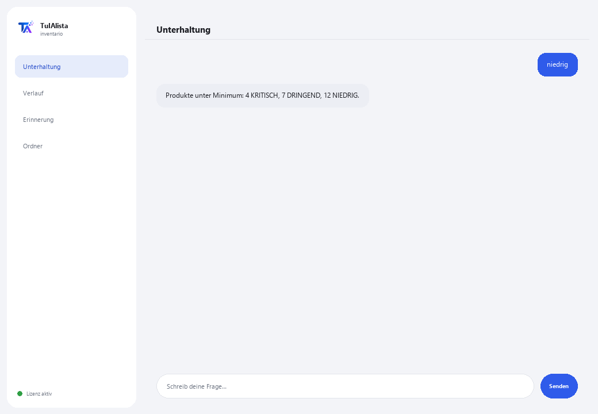

Bestandsagent
Erkennt, was nachbestellt werden muss, wie viel Ihr Bestand wert ist und wo Sie gebundenes Kapital haben — in Sekunden.
Was löst er und was brauchen Sie?
Bestand zu halten ist ein Gleichgewicht: Fehlt er, verlieren Sie Umsatz; ist er zu hoch, haben Sie gebundenes Geld. Dies von Hand in Excel-Tabellen zu prüfen ist mühsam, und fast niemand tut es rechtzeitig. Dieser Agent verwandelt Ihre Bestandsdateien in ein Steuerungspanel für Einkauf und Kapital.
- Sie brauchen: Ihren Lizenzschlüssel (TIA-XXXX-XXXX-XXXX-XXXX) und den Ordner mit Ihren Bestandsdateien (Excel oder CSV). Kein Python, keine technischen Kenntnisse.
- Erstes Ergebnis in weniger als 5 Minuten: Sie installieren, aktivieren, wählen Ihren Ordner und führen niedrig aus, um zu sehen, welches Produkt bald ausgeht.
- Die Daten Ihres Unternehmens verlassen nie Ihren Computer — die Analyse läuft lokal.
soporte@tuialista.com oder besuche tuialista.com/soporte — wir antworten normalerweise am selben Werktag.1 Was dieser Agent tut
Sie zeigen ihm den Ordner mit Ihren Bestandsdateien und er:
- Liest sie (Excel .xlsx und CSV) und erkennt automatisch die Spalten (auf Deutsch, Spanisch oder Englisch).
- Erkennt Produkte unter dem Mindestbestand und ihre Dringlichkeit.
- Schlägt vor, wie viel nachbestellt werden soll (basierend auf Umschlag oder einem Standardwert).
- Berechnet den Gesamtwert des Bestands, zu Kosten und Verkaufspreis, nach Kategorie und Lieferant.
- Identifiziert toten Bestand (ohne Bewegung), der Kapital bindet.
- Klassifiziert Produkte nach ABC-Analyse (wo sich der Wert konzentriert).
- Erkennt überschüssigen Bestand.
- Beantwortet Ihre Fragen: “was sollte ich zuerst nachbestellen?”
Ergebnis: Sie wissen in Sekunden, was Sie kaufen, was Sie freisetzen sollen und wo sich Ihr Geld befindet.
2 Installation (2 Minuten)
Für Windows. Keine dauerhafte Internetverbindung nötig, nichts wird in die Cloud hochgeladen.
Laden Sie das Installationsprogramm von tuialista.com/descargar herunter (Bestandsagent) und öffnen Sie es. Es erstellt eine Verknüpfung mit dem Logo auf Ihrem Desktop — kein Python oder Terminal erforderlich.
Doppelklicken Sie auf das neue Symbol. Fügen Sie Ihren Lizenzschlüssel ein (er wurde Ihnen beim Kauf per E-Mail zugesandt) und klicken Sie auf Aktivieren. Sie sehen ein grünes Häkchen, wenn er gültig ist.
Wählen Sie den Ordner mit Ihren Bestandsdateien aus und klicken Sie auf Agent jetzt verwenden. Beim nächsten Mal startet er direkt — er merkt sich Ihren Schlüssel und Ihren Ordner.
3 So verwenden Sie ihn
Der Agent öffnet ein Chat-Fenster, wie eine Messaging-App — kein schwarzer Programmierer-Bildschirm. Sie schreiben Ihren Befehl oder Ihre Frage in das Textfeld unten, klicken auf Senden (oder Enter), und die Antwort erscheint als Nachricht, genau wie auf diesem echten Bild:

Die folgenden Befehle sind die Wörter, die Sie in dasselbe Textfeld eingeben können:
> niedrig [Schwelle]Produkte mit Bestand gleich oder unter ihrem Minimum (oder der von Ihnen angegebenen Schwelle), sortiert nach Dringlichkeit (KRITISCH / DRINGEND / NIEDRIG) mit geschätzten Resttagen bei Umschlag. Z. B.: niedrig 5.
> nachbestellenSchlägt für jedes niedrige Produkt vor, wie viel bestellt werden soll (basierend auf Umschlag für ~30 Tage oder einem Standardwert) und schätzt die Kosten.
> WertGesamtwert zu Kosten und Verkaufspreis, potenzielle Marge und Aufschlüsselung nach Kategorie und Lieferant.
> tot [Tage]Produkte mit Bestand, aber ohne Bewegung in den letzten N Tagen (90 Standard), sortiert nach gebundenem Wert. Z. B.: tot 120.
> abcA/B/C-Klassifizierung (Pareto) nach Bestandswert: die “A” konzentrieren den größten Teil des Werts und verdienen mehr Aufmerksamkeit.
> ÜberschussProdukte mit Bestand weit über ihrem Minimum und das in diesem Überschuss gebundene Kapital.
> freie Frage?Schreiben Sie jede Frage in natürlicher Sprache, z. B.: welche Produkte der Kategorie Getränke gehen bald aus?
> beendenBeendet die Sitzung (funktioniert auch mit exit).
Möchten Sie die 20 vollständigen Rezepte mit einem echten Beispiel für jedes sehen? Sehen Sie sich den Rezeptkatalog an — ein eigenes Dokument wegen seiner Länge: catalogo_recetas.pdf neben diesem Handbuch, oder die interaktive Version unter tuialista.com/guia/inventario/recetas.
4 Beispiele für häufige Anwendungen
Der Einkauf der Woche
niedrig → nachbestellen — Sie sehen, was fehlt und wie viel bestellt werden soll, mit geschätzten Kosten.
Gebundenes Geld freisetzen
tot 90 → Überschuss — Sie erkennen das gebundene Kapital in Produkten ohne Bewegung oder mit Überschuss.
Ihre Aufmerksamkeit fokussieren
abc — Sie wissen, welche “A”-Produkte mehr Aufmerksamkeit brauchen, weil sie den Wert konzentrieren.
Eine punktuelle Abfrage
wie hoch ist der Gesamtwert meines Bestands zu Kosten?
5 Häufig gestellte Fragen
Werden meine Daten ins Internet hochgeladen?
Welche Formate akzeptiert er?
Muss ich meine Spalten exakt benennen?
Sagt er wirklich voraus, wann nachbestellt werden soll?
Brauche ich die Spalte für Umschlag oder letzten Ausgang?
In welcher Sprache antwortet er mir?
Verändert er meine Dateien?
Kann ich den Datenordner ändern?
Sind die Berechnungen genau?
Kann er mehrere Dateien lesen?
6 Problemlösung
Zeigt “CSV/XLSX ohne erkannte Spalten”
Eine .xlsx wird nicht geladen
Zeigt “Lizenz ungültig” oder fordert erneute Verbindung
“Keine KI-Anbieter konfiguriert”
Keine dieser Lösungen hat Ihr Problem behoben? Schreiben Sie uns direkt — wir schauen es uns gerne gemeinsam mit Ihnen an.
soporte@tuialista.com oder besuche tuialista.com/soporte — wir antworten normalerweise am selben Werktag.7 Datenschutz und Vertraulichkeit
Die Daten Ihres Unternehmens verlassen nie Ihren Computer.
- Der Agent liest und analysiert Ihre Dateien lokal, auf Ihrem eigenen Gerät. Er lädt sie auf keinen Server hoch.
- Alle Berechnungen (niedriger Bestand, Wert, ABC, Überschuss, toter Bestand) finden auf Ihrem Gerät statt.
- Das Einzige, was über das Internet läuft, ist: (1) eine Überprüfung, dass Ihre Lizenz aktiv ist — die Ihre Daten nicht enthält —, und (2) bei einer freien Frage wird eine relevante Bestandszusammenfassung an die KI-Engine gesendet, um die Antwort zu verfassen.